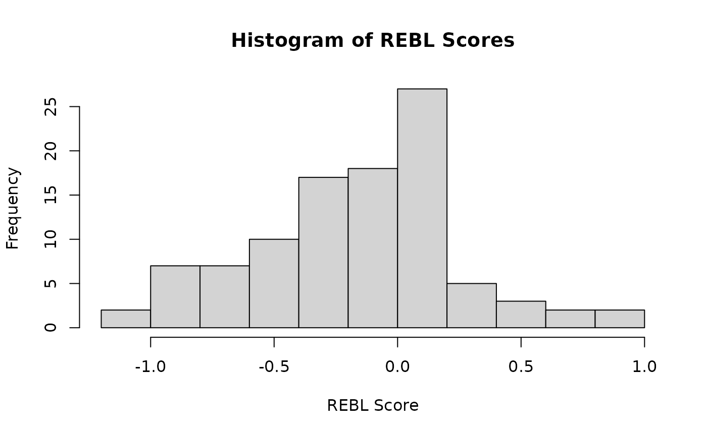

NOTE: Example df is small and simulated, which causes non-convergence errors in some models.
Get REBL Scores
Once we have a model we are happy with, we can get a data frame with our REBL scores ():
rebl_items <- id_rebl_items(
df = example,
pattern = '^(?!res).*',
perl = TRUE
)
model_cml <- get_rasch_model(
df = example,
id = 'respondent_id',
rebl_items = rebl_items,
type = 'cml'
)
rebl_scores <- get_rebl_scores(model = model_cml)
head(rebl_scores)
#> id rebl_cml
#> 1 p1 -0.1714695574
#> 2 p2 -0.1714695574
#> 3 p3 0.0005654146
#> 4 p4 0.3469324887
#> 5 p5 -0.3458996795
#> 6 p6 0.7134383210rebl_scores are the latent person ability parameter
.
We also include person fit statistics.
hist(
rebl_scores$rebl_cml,
main = 'Histogram of REBL Scores',
xlab = 'REBL Score',
ylab = 'Frequency'
)
TODO: Note symmetry
The function recognizes the model type and generates the output df
accordingly. Let’s try it with the mml_uncon model:
model_con <- get_rasch_model(
df = example,
id = 'respondent_id',
rebl_items = rebl_items,
type = 'mml_con'
)
rebl_scores <- get_rebl_scores(
model = model_con,
df = example,
rebl_items = rebl_items
)
head(rebl_scores[, 1:6])
#> respondent_id foodLocal foodLunchNoMeat foodMeat foodOatMilk foodTofu
#> 1 p1 1 0 1 0 0
#> 2 p2 1 0 0 0 0
#> 3 p3 0 1 1 0 1
#> 4 p4 1 1 0 1 1
#> 5 p5 1 1 0 1 1
#> 6 p6 0 0 1 1 1Here, Exp is the expected frequency of the response
pattern, z1 is the person parameter (REBL score), and
se.z1 is the standard error. All of the ltm varieties of
models result in this same structure:
model_2pl <- get_rasch_model(
df = example,
id = 'respondent_id',
rebl_items = rebl_items,
type = 'mml_tpm'
)
rebl_scores <- get_rebl_scores(
model = model_2pl,
df = example,
rebl_items = rebl_items
)
head(rebl_scores[, 1:6])
#> respondent_id foodLocal foodLunchNoMeat foodMeat foodOatMilk foodTofu
#> 1 p1 1 0 1 0 0
#> 2 p2 1 0 0 0 0
#> 3 p3 0 1 1 0 1
#> 4 p4 1 1 0 1 1
#> 5 p5 1 1 0 1 1
#> 6 p6 0 0 1 1 1TODO: interpret
model_tpm <- get_rasch_model(
df = example,
id = 'respondent_id',
rebl_items = rebl_items,
type = 'mml_tpm'
)
rebl_scores <- get_rebl_scores(
model = model_tpm,
df = example,
rebl_items = rebl_items
)
head(rebl_scores[, 1:6])
#> respondent_id foodLocal foodLunchNoMeat foodMeat foodOatMilk foodTofu
#> 1 p1 1 0 1 0 0
#> 2 p2 1 0 0 0 0
#> 3 p3 0 1 1 0 1
#> 4 p4 1 1 0 1 1
#> 5 p5 1 1 0 1 1
#> 6 p6 0 0 1 1 1TODO: interpret